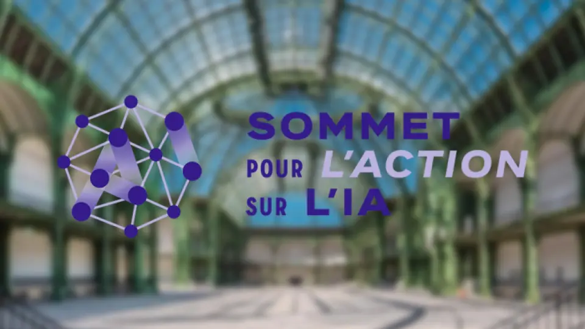

IA : Bouclier ou menace pour la cybersécurité
Cette article explore le double rôle de l'intelligence artificielle dans le domaine de la cybersécurité. Une arme pour cybercriminels et un bouclier contre les cyberattaques.
Lire l'articleDéveloppeur passionné par la création d'applications web et l'intelligence artificielle, je transforme des idées en solutions concrètes et innovantes.
Découvrez mon parcours et ma passion pour l'informatique
Depuis mon enfance, je nourris une passion profonde pour l'informatique. Cette fascination pour la technologie m'a naturellement orienté vers les études en développement web et logiciel.
Développeur full-stack en constante progression, je m'efforce de relever de nouveaux défis techniques pour enrichir mes compétences et contribuer à des projets innovants, notamment dans le domaine de l'IA.
Je crois en l'importance de l'apprentissage continu et de l'innovation. Chaque projet est une opportunité d'apprendre et de créer des solutions qui ont un impact positif.
Les étapes clés de ma formation en informatique
Lycée Jacques Brel, Vénissieux
Formation complète en développement d'applications et administration de systèmes, avec de nombreux projets pratiques et deux stages en entreprise. Diplôme obtenu en 2025.
Diplômé du BTS SIO, je suis actuellement à la recherche d'une opportunité professionnelle ou d'une formation en alternance pour continuer à progresser en développement full-stack.
Un aperçu de mes projets les plus significatifs
Découvrez tous mes projets organisés par catégories : stages professionnels, projets BTS, créations personnelles, outils IA et bien plus encore.
Expériences en entreprise
2 projetsRéalisations académiques
3 projetsProjets et outils IA
7 projetsSites et applications
3 projetsDéveloppement ludique
1 projetCréations audiovisuelles
2 projetsService d'envoi automatique quotidien d'un e-mail contenant les prévisions météo complètes avec graphique SVG intégré, données API OpenWeather. Première utilisation du format JSON pour consommer une API REST.
Assistante vocale capable d'ouvrir des pages web, des fichiers et des applications via des commandes vocales en langage naturel.
Création de jeux vidéo avec Unity et C#, comme mon Flappy Bird personnel — mon premier projet de jeu complet.
Cliquez sur une technologie pour voir les projets associés
Ma veille sur les enjeux de l'intelligence artificielle en cybersécurité
Cette article explore le double rôle de l'intelligence artificielle dans le domaine de la cybersécurité. Une arme pour cybercriminels et un bouclier contre les cyberattaques.
Lire l'articleExploration des enjeux majeurs de l'intégration de l'intelligence artificielle dans la cybersécurité.
Lire l'articleRetour sur l'événement "European Cyber Week" avec l'intelligence artificielle comme sujet principal.
Lire l'articleRetour sur l'événement "Colloque 2024 IA Générative et Cybersécurité".
Lire l'articleGuide de la CISA pour faciliter la collaboration sur les risques de cybersécurité liés à l'IA.
Lire l'article
Retour sur le Sommet pour l'action sur l'intelligence artificielle tenu à Paris.
Lire l'article